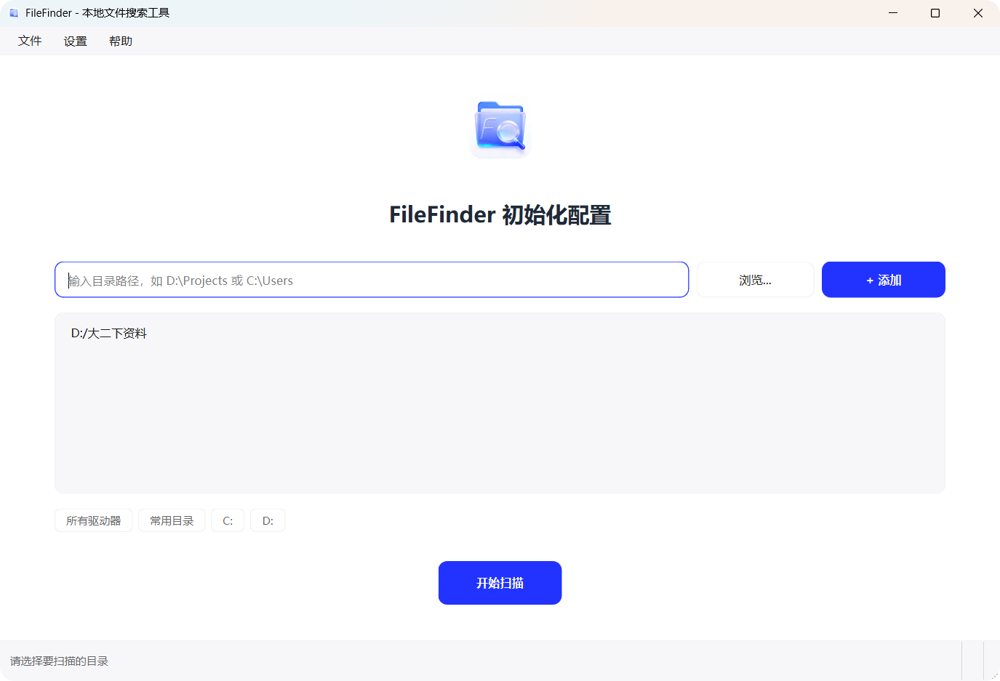
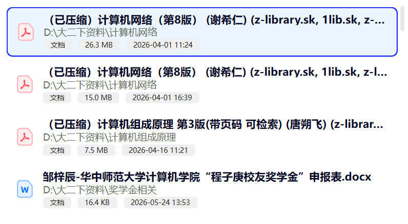
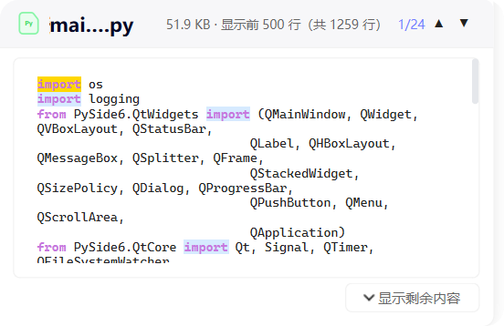

关于 FileFinder
FileFinder 是一款轻量级的本地文件搜索桌面工具，帮助您通过文件名或文件内容快速定位电脑中的文件。它采用 SQLite 持久化索引，一次扫描终生复用，让搜索响应达到毫秒级。

快速开始
首次启动
第一次打开 FileFinder 时，会进入初始化配置页面，引导您选择需要建立索引的目录。

- 添加扫描目录 — 在输入框中输入目录路径（如
D:\Projects），或点击「浏览...」按钮选择文件夹，然后点击「+ 添加」 - 快捷添加 — 使用下方的快捷按钮一键添加：点击「所有驱动器」添加全部磁盘，点击「常用目录」添加桌面/文档/下载等用户目录，或点击单个盘符按钮添加指定驱动器
- 开始扫描 — 添加至少一个目录后，点击「开始扫描」按钮，FileFinder 将遍历所选目录并建立索引
磁盘扫描
扫描流程
点击「开始扫描」后，FileFinder 会进入扫描进度页面，实时显示扫描状态：
- 进度百分比 — 顶部大号数字显示当前扫描进度
- 进度条 — 可视化进度条，直观展示扫描进展
- 已发现文件数 — 实时统计已发现的文件数量
- 扫描日志 — 下方文本区域实时输出正在扫描的目录路径
- 取消按钮 — 随时可以中断扫描，已扫描的数据不会丢失
自动索引同步
扫描完成后，FileFinder 会通过 QFileSystemWatcher 持续监控已索引的目录。当您在文件管理器中新增、修改或删除文件时，索引会自动增量更新，无需手动重新扫描。
~/.filefinder/filefinder.db 中，采用 SQLite WAL 模式 + 内存缓存，确保搜索响应速度。一次扫描，终生复用！跳过的目录
为提高扫描效率，以下系统/开发目录会被自动跳过：
| 目录 | 说明 |
|---|---|
node_modules | Node.js 依赖目录 |
__pycache__ | Python 缓存目录 |
.git / .svn / .hg | 版本控制目录 |
.venv / venv | Python 虚拟环境 |
build / dist | 构建输出目录 |
.idea / .vscode / .vs | IDE 配置目录 |
$RECYCLE.BIN | 回收站 |
System Volume Information | 系统卷信息 |
搜索功能
FileFinder 的搜索栏位于主窗口顶部，提供两种搜索维度：文件名搜索和文件内容搜索。通过左侧的分段控制器（「文件名」/「文件内容」）切换搜索维度。
文件名搜索
文件名搜索基于 SQLite 索引 + 内存缓存，响应速度极快。支持四种匹配模式，通过搜索栏下方的滑块切换：
在文件名中任意位置匹配关键词，是最常用的搜索方式。不区分大小写（除非勾选「区分大小写」）。
read → 匹配 README.md、spreadsheet.xlsx、readme.txt
文件名（含扩展名）必须完全一致才匹配。
main.py → 只匹配 main.py，不匹配 main.pyc 或 mymain.py
使用 * 和 ? 通配符进行模式匹配。* 匹配任意多个字符，? 匹配单个字符。
*.py → 匹配所有 Python 文件输入
test_?.py → 匹配 test_a.py、test_1.py 等
使用正则表达式进行高级模式匹配，适合有经验的用户。
\d+\.py → 匹配 123.py、1.py 等以数字开头的 Python 文件输入
^(main|app) → 匹配以 main 或 app 开头的文件
相关度评分
文件名搜索结果按相关度评分排序，评分规则如下：
| 匹配类型 | 分数 | 示例 |
|---|---|---|
| 精确匹配 | 100 | 搜索 main.py，文件名恰好为 main.py |
| 前缀匹配 | 80 | 搜索 main，文件名以 main 开头 |
| 词边界匹配 | 60 | 搜索 main，匹配 my_main_file.py 中的 main |
| 子串匹配 | 40 | 搜索 main，匹配 remain.py 中的 main |
文件内容搜索
切换到「文件内容」模式后，可以在文件内容中搜索关键词。内容搜索采用多线程并发（最多 8 个线程），支持实时进度反馈。
- 大小写敏感 — 勾选「区分大小写」复选框后，搜索将严格区分大小写
- 搜索范围 — 仅搜索纯文本和代码文件（自动跳过二进制文件）
- 文件大小限制 — 默认跳过超过 10MB 的文件，避免内存占用过高
- 上下文行 — 搜索结果会显示匹配行前后各 3 行的上下文内容
- 可取消 — 搜索过程中可随时点击搜索按钮取消
联合搜索
FileFinder 支持同时使用文件名和内容条件进行搜索。操作方式：
- 先在「文件名」模式下输入文件名关键词并搜索
- 切换到「文件内容」模式，输入内容关键词并搜索
- 系统自动执行联合搜索：取文件名结果与内容结果的交集，即只返回同时满足两个条件的文件
config 且内容包含 database 的文件，快速定位配置文件中的数据库配置项。搜索范围
在主界面右侧面板顶部，可以指定搜索范围。点击「指定搜索范围」区域可以展开/收起范围设置。
- 全部已扫描目录 — 默认在所有已建立索引的目录中搜索
- 指定目录 — 点击「选择目录」按钮，可以精确选择要搜索的目录
- 索引状态 — 面板会显示当前索引的文件总数和各目录的扫描状态（绿色=完成、黄色=未完成、红色=失败）
- 重新扫描 — 如果目录尚未扫描或扫描失败，可以点击「扫描」按钮重新建立索引
筛选与排序
搜索栏下方是筛选栏，提供文件类型筛选和结果排序功能。
文件类型筛选
筛选栏提供 9 大文件分类按钮，点击即可筛选对应类型：
| 分类 | 说明 | 子分类 |
|---|---|---|
| 全部类型 | 显示所有文件（默认） | — |
| 文件夹 | 仅显示目录 | — |
| 文档 | 文本、PDF、Word、Excel、PPT、电子书 | 文本 / PDF / Word / Excel / PPT / 电子书 |
| 代码 | Python、JS/TS、HTML/CSS、Java、C/C++ 等 | Python / JS/TS / HTML/CSS / Java / C/C++ / Go / Rust / Ruby / PHP / Shell / SQL / JSON |
| 图片 | JPG、PNG、GIF、BMP、SVG、图标 | JPG / PNG / GIF / BMP / SVG / 图标 |
| 视频 | MP4、MKV、AVI、MOV 等 | MP4 / MKV / AVI / MOV / 其他 |
| 音频 | MP3、WAV、FLAC 等 | MP3 / WAV / FLAC / 其他 |
| 压缩包 | ZIP、RAR、7Z、TAR 等 | ZIP / RAR / 7Z / TAR |
| 其他 | 不属于以上分类的文件 | — |
选择「文档」「代码」「图片」「视频」「音频」「压缩包」等分类后，会出现子分类滑块，可以进一步筛选具体的文件格式。
排序方式
筛选栏右侧提供排序控件，支持 4 种排序方式和升降序切换：
| 排序方式 | 说明 |
|---|---|
| 名称 | 按文件名字母顺序排序（默认） |
| 相关度 | 按搜索匹配相关度评分排序 |
| 修改时间 | 按文件最后修改时间排序 |
| 大小 | 按文件大小排序 |
点击排序方式右侧的「升序」/「降序」按钮可以切换排序方向。
结果列表
搜索结果以列表形式展示在主界面左侧，每个结果项包含以下信息：

- 文件类型图标 — 根据文件扩展名显示对应的 SVG 图标（60+ 种）
- 文件名 — 搜索关键词会在文件名中高亮显示
- 文件路径 — 文件所在目录，过长时自动省略
- 文件大小<>— 人类可读的大小格式（如 1.2 MB）
- 修改时间 — 文件最后修改日期
- 匹配标签 — 显示匹配原因（如「名称匹配」「内容匹配 N 处」）
分批渲染
当搜索结果较多时，结果列表采用分批渲染策略：
- 初始显示最多 200 条结果
- 列表底部显示「加载更多」按钮，每次加载 100 条
- 最多显示 1000 条搜索结果
右键菜单
在搜索结果上点击鼠标右键，会弹出圆角右键菜单，提供以下操作：
| 菜单项 | 功能 | 快捷键 |
|---|---|---|
| 打开 | 使用系统默认程序打开文件 | 双击 |
| 打开所在文件夹 | 在文件资源管理器中定位文件 | — |
| 复制 | 复制文件到剪贴板（可粘贴到文件夹） | Ctrl+C |
| 复制路径 | 复制文件的完整路径到剪贴板 | — |
| 属性 | 弹出文件属性对话框（名称、路径、大小、时间等） | — |
拖拽操作
您可以从结果列表中拖拽文件到其他应用程序（如文件资源管理器、编辑器等），实现快速文件操作。拖拽时会显示自定义的文件图标拖拽预览。
文件预览
选中搜索结果后，右侧预览面板会自动显示文件内容预览。FileFinder 支持 10+ 种文件格式的预览，并带有搜索关键词高亮功能。
文本 / 代码预览
文本和代码文件在预览面板中以等宽字体显示，支持以下特性：
- 语法高亮 — Python、JavaScript、Markdown、JSON 等语言自动语法着色
- 搜索关键词高亮 — 内容搜索后，匹配的关键词在预览中以醒目颜色标记
- 行号显示 — 代码文件左侧显示行号
- 大文件提示 — 超过 2MB 的文本文件会提示文件过大，点击可强制加载（上限 10MB）
- 行数限制 — 最多预览 500 行，超出部分截断并提示

PDF 预览
PDF 文件在预览面板中渲染为图片显示：
- 分页加载 — 初始加载前 5 页，点击「加载更多」可继续加载（每次 10 页）
- 缩放控制 — 支持放大/缩小按钮和缩放滑块
- 适应宽度 — 默认按面板宽度自适应渲染
- 大文件提示 — 超过 10MB 的 PDF 会提示确认后再加载
图片预览
图片文件在预览面板中直接显示：
- 支持格式 — JPG、PNG、GIF、BMP、SVG、ICO、TIFF
- GIF 动画 — GIF 文件自动播放动画
- 缩放拖拽 — 支持鼠标滚轮缩放和拖拽平移
- 适应窗口 — 默认按面板大小自适应显示
- 大文件限制 — 超过 200MB 的媒体文件会提示确认
Excel 预览
Excel 文件以表格形式展示：
- Sheet 切换 — 顶部标签页切换不同的 Sheet
- 分页加载 — 每个 Sheet 初始加载前 3 页，可加载更多
- 表格样式 — 带边框的表格布局，列宽自适应
- 大文件提示 — 超过 10MB 的 Excel 文件会提示确认
Markdown 预览
Markdown 文件支持两种预览模式：
- 渲染模式 — 将 Markdown 渲染为富文本显示（标题、列表、代码块、链接等）
- 源码模式 — 显示原始 Markdown 文本，带语法高亮
- 通过预览面板顶部的切换按钮在两种模式间切换
其他格式预览
Word 文档 (.docx)
Word 文档以纯文本形式展示内容，超过 5MB 的文件会提示确认后再加载。
HTML 文件 (.html / .htm)
HTML 文件支持渲染模式和源码模式切换，渲染模式会显示格式化的网页内容。
压缩包 (.zip / .rar / .7z / .tar 等)
压缩包文件会自动列出内部文件清单，显示目录数和文件数，以及每个条目的名称和大小。
视频 / 音频
视频和音频文件会显示媒体属性信息（文件名、大小、格式、修改时间等），暂不支持内嵌播放。
文件夹
选中文件夹时，预览面板会显示文件夹内的子项列表，包括文件和子目录的名称、类型、大小等信息。
快捷键
| 快捷键 | 功能 | 适用场景 |
|---|---|---|
| Enter | 执行搜索 | 搜索输入框获得焦点时 |
| ↑ / ↓ | 浏览搜索历史 | 搜索输入框获得焦点时 |
| Ctrl+C | 复制选中文件 | 结果列表中选中文件时 |
| 双击 | 使用默认程序打开文件 | 结果列表中 |
| 右键 | 打开右键菜单 | 结果列表中 |
| 拖拽 | 拖拽文件到其他应用 | 结果列表中 |
支持的文件格式
文本文件
.txt .md .log .csv .xml .yaml .yml .ini .cfg .conf .toml .env .gitignore
代码文件
.py .js .ts .html .css .java .c .cpp .h .go .rs .rb .php .sh .bat .ps1 .sql .json
文档文件
.pdf .docx .xlsx .pptx .rtf .epub
图片文件
.jpg .jpeg .png .gif .bmp .tiff .svg .ico
视频文件
.mp4 .mkv .avi .mov .wmv .flv
音频文件
.mp3 .wav .flac .aac .ogg .wma
压缩包
.zip .rar .7z .tar .gz .bz2 .xz .tgz .tbz2
自动排除的格式
以下二进制格式在搜索和扫描时会被自动排除：.dll .exe .sys .obj .lib .pdb .so .dylib
性能说明
性能指标
| 指标 | 参数 | 说明 |
|---|---|---|
| 搜索防抖 | 300ms | 输入后延迟 300ms 再执行搜索，避免频繁触发 |
| 最大搜索结果 | 1000 条 | 超过 1000 条结果时截断 |
| 初始显示 | 200 条 | 结果列表初始显示 200 条 |
| 加载更多 | 100 条/次 | 点击「加载更多」每次加载 100 条 |
| 内容搜索文件大小限制 | 10MB | 超过 10MB 的文件跳过内容搜索 |
| 内容搜索线程数 | 4-8 个 | 多线程并发搜索文件内容 |
| 单文件搜索超时 | 30 秒 | 单个文件内容搜索超过 30 秒自动跳过 |
| 总搜索超时 | 120 秒 | 整个搜索任务超过 120 秒自动终止 |
| 预览文本大小限制 | 2MB | 超过 2MB 的文本文件提示确认后加载 |
| 预览最大行数 | 500 行 | 文本预览最多显示 500 行 |
| 批量写入 | 500 条/批 | 扫描时数据库每 500 条提交一次 |
| 渲染批次 | 50 条/批 | UI 分批渲染结果项，每批 50 条 |
数据库优化
- 采用 SQLite WAL 模式，读写互不阻塞
- 缓存大小 16MB + 内存映射 64MB，加速查询
- 启动时全表加载到内存缓存（SearchCache），搜索无需磁盘 IO
- 文件系统监控 + 增量同步，索引实时更新
配置文件
FileFinder 的配置文件位于 ~/.filefinder/config.json，数据库文件位于 ~/.filefinder/filefinder.db。
配置项说明
常见问题
文件名搜索基于 SQLite 索引 + 内存缓存，通常在毫秒级完成。如果搜索较慢，可能是以下原因：
- 索引尚未建立完成 — 请先完成磁盘扫描
- 内容搜索范围过大 — 尝试缩小搜索范围或添加文件类型筛选
- 索引文件数量过多 — 考虑排除不需要的目录
可能的原因：
- 文件所在目录未被扫描 — 请在搜索范围面板中确认目录已建立索引
- 文件在系统排除目录中 — 如
C:\Windows、node_modules等会被自动跳过 - 文件是二进制格式 —
.dll、.exe等格式会被自动排除 - 内容搜索时文件过大 — 超过 10MB 的文件会被跳过
- 文件编码问题 — FileFinder 使用 charset-normalizer 自动检测编码，极少数特殊编码可能无法正确识别
在右侧搜索范围面板中，找到需要重新扫描的目录，点击其旁边的「扫描」按钮即可。FileFinder 也支持通过文件系统监控自动增量更新索引。
不会。所有耗时操作（磁盘扫描、文件名搜索、内容搜索）均在后台线程执行，不会阻塞 UI 主线程。搜索结果采用分批渲染（每批 50 条），确保大量结果时界面依然流畅。
绝对不会。FileFinder 是纯本地工具，不发起任何网络请求，不上传任何用户数据。所有索引和配置都存储在本地 ~/.filefinder/ 目录中。
目前内容搜索仅支持纯文本和代码文件。PDF、Word、Excel 的内容搜索功能正在开发中，将在后续版本中支持。不过，预览面板已经支持 PDF、Excel、Word 文档的预览。
通过菜单栏「帮助 → 重置所有设置」可以清除所有配置和索引数据，恢复到初始状态。注意：此操作不可撤销，重置后需要重新扫描目录。
目前主要支持 Windows 10/11。由于使用 PySide6 框架，理论上也支持 macOS 和 Linux，但未经充分测试。